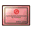

City Passes
Passes that get you past the guards at the borders and at the gates of Uptown.
Uptown
- The guards at the gates of Uptown want an
 Acropolis City Pass.
Acropolis City Pass. -
Finish one quest of any kind, then talk to the Elegant Lady in Downtown. She gives you an
Acropolis City Pass. -
The way down to Downtown is in the small passages beside each of the four Uptown gates.
- A guard turns you away while someone is possessing you.
 Elegant Lady
Elegant LadyBorder passes
| Pass | Checked at | Price |
|---|---|---|
| Northern Border Guard at the north gate of Cape Northerin, on the road to Northern Promenade | 500 G / 1,000 G / 5,000 G | |
 United Iron South Pass |
Iron South Border Guard at the south gate of Cape Southerin, on the road to Upper Iron City | 500 G / 1,000 G / 5,000 G |
| East Cape Border Guard at the east gate of East Cape, on the road to Fareast City | 3,000 G / 6,000 G | |
| Morg Land Pass | Morg Border Guard at the airship dock on Battleship Island, for the airship to Morg City | 500 G / 1,000 G / 5,000 G |
-
Northern Border Guard checks the
 Northern Kingdom Pass at the north gate of Cape Northerin.
Northern Kingdom Pass at the north gate of Cape Northerin. -
Iron South Border Guard checks the United Iron South Pass at the south gate of Cape Southerin.
-
East Cape Border Guard checks the
 Fareast Republic Pass at the east gate of East Cape.
Fareast Republic Pass at the east gate of East Cape. -
Morg Border Guard checks the Morg Land Pass before you board the airship to Morg City on Battleship Island.
 Northern Border Guard
Northern Border Guard Iron South Border Guard
Iron South Border Guard
 Morg Border Guard
Morg Border GuardWhere to buy them
| Pass | Sold by |
|---|---|
|
|
| United Iron South Pass |
|
|
|
| Morg Land Pass |
|
- The guild masters are in the guild rooms off Guild Palace Lobby 2F, Guild Palace Lobby 3F and Guild Palace Lobby 4F in Uptown, so each job group can buy the pass to its own home country there.
Good to know
- Each crossing uses up one pass, except the Fareast Republic Pass, which you only show once.
- The first delivery quest to Upper Iron City lets you through for free. Take it at the Quest Counter (Cafe Master in the Cafe, Downtown) instead of buying a pass.